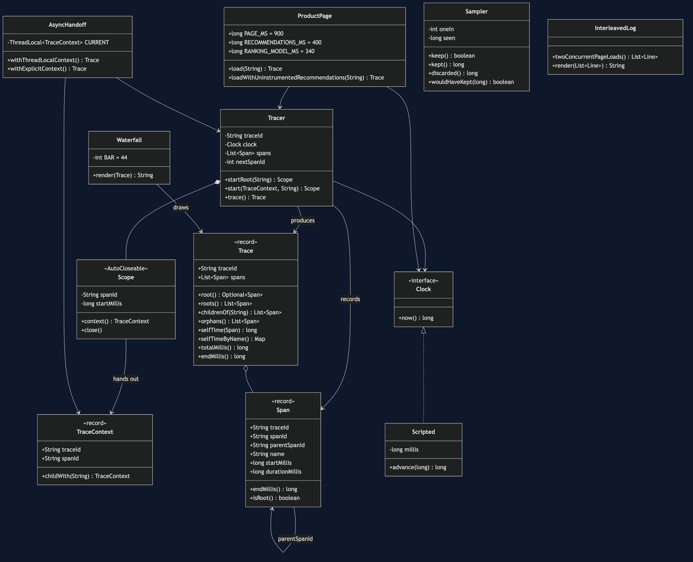
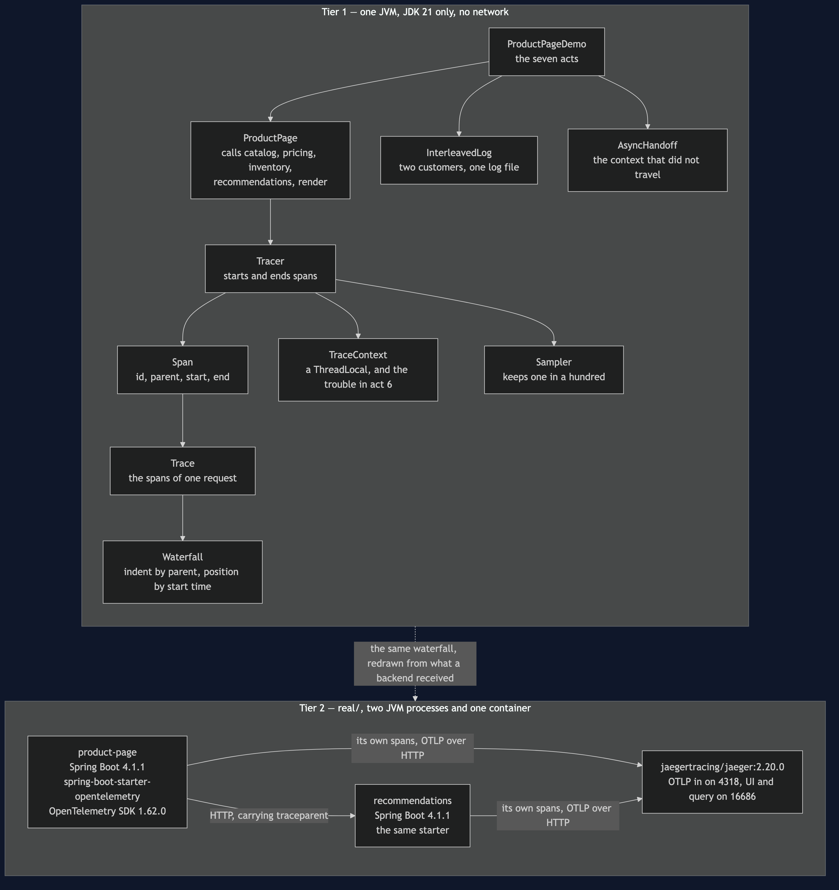
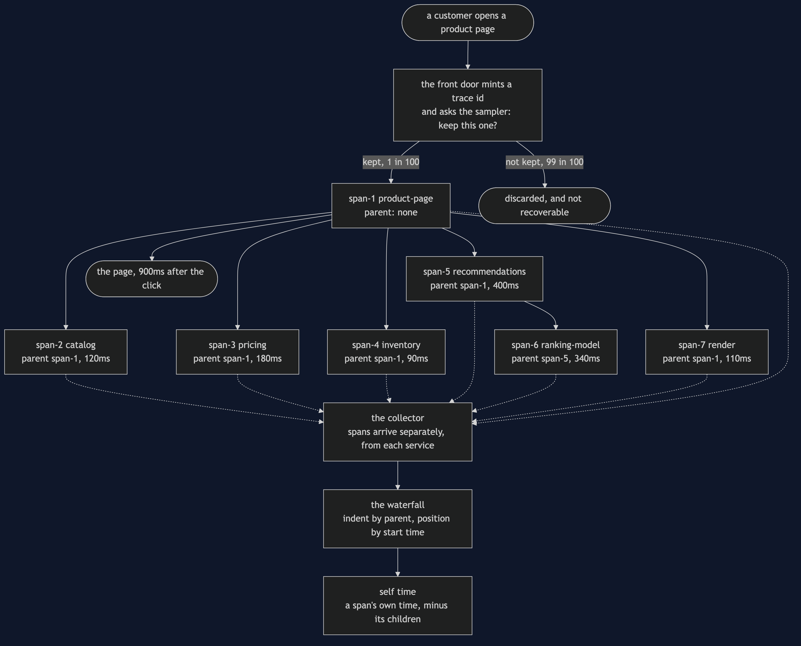
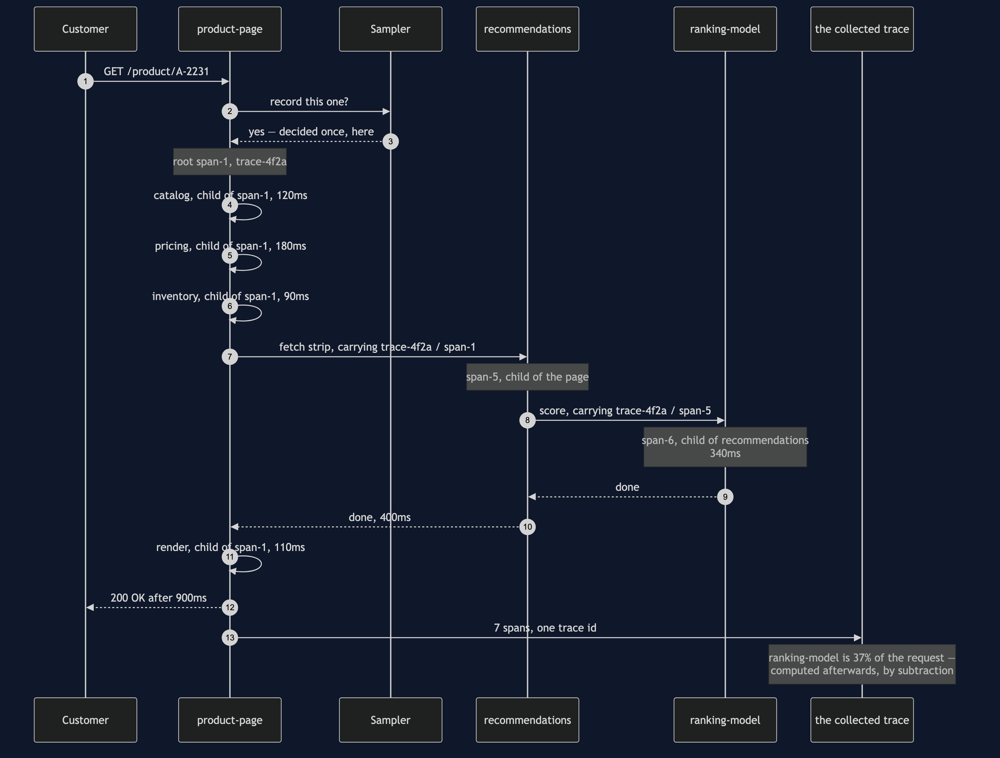
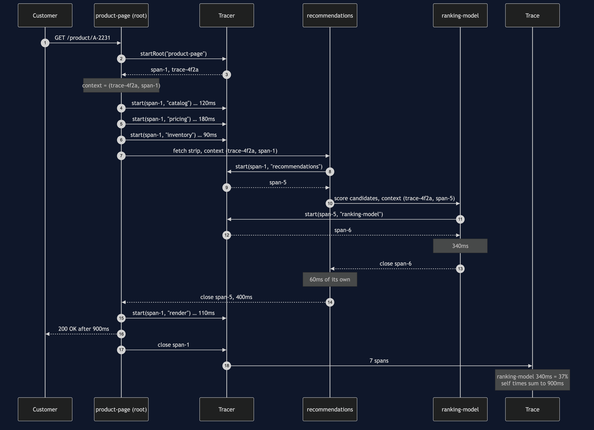
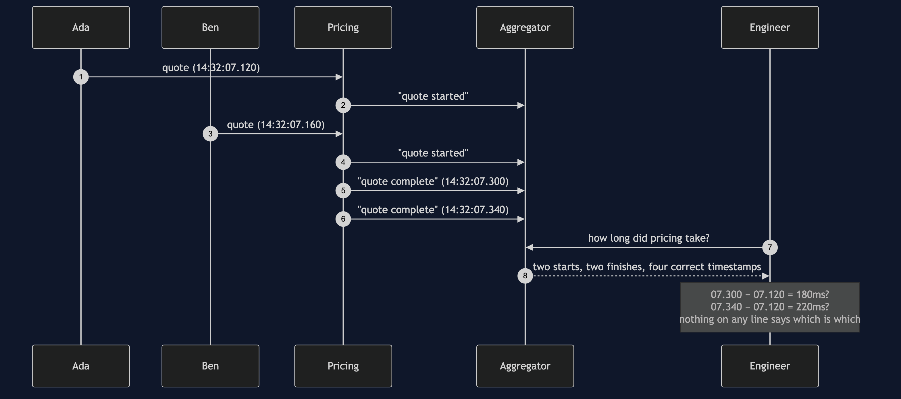
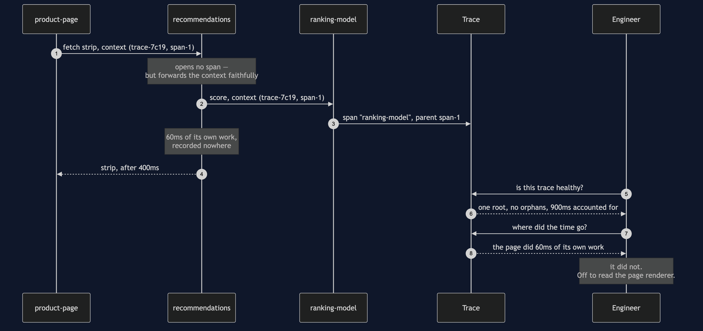
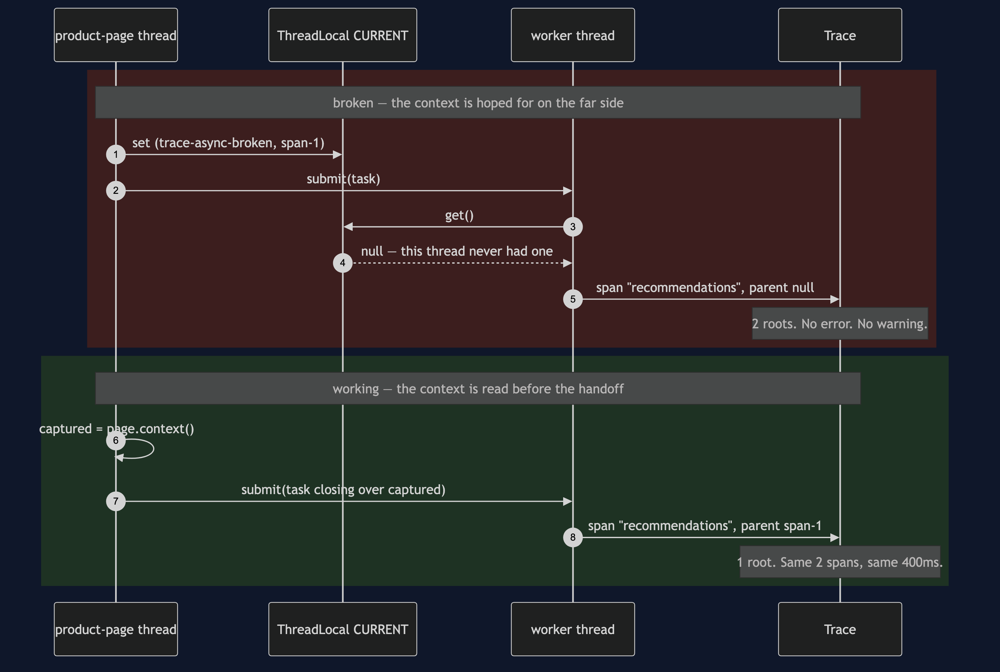
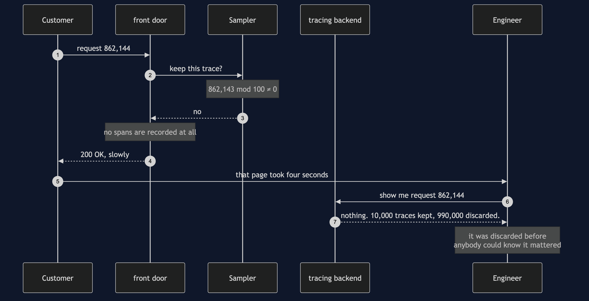

Distributed Tracing Pattern
**Give one customer request one identifier, have every unit of work record how long it took and what asked for it — and then accept that the answer can be confidently wrong in three ways, none of which raises an error.**
Think of a hospital. You arrive at reception and you are given a wristband, and that wristband follows you to X-ray, to the blood test, to the consultant. Every department writes on its own form, but every form carries your number, so afterwards somebody can put your whole afternoon back together in order. And notice the second half: each form also says who sent you. Reception sent you to X-ray; X-ray sent you for bloods. That is the bit that turns a pile of forms into a story.
The shop has a product page that takes nine hundred milliseconds. Four services contributed to it — catalog, pricing, inventory and recommendations — and all four are healthy, all four are responding, and all four are writing correct logs. Nobody in the building can say which of them spent the time. There is exactly one measurement in the whole situation, and it is the complaint.
Run
./gradlew runSeven acts. The first four are the problem and the pattern; the last three are the bill.
Act 2 is why more logging does not help. Two customers are on the site at once:
14:32:07.120 catalog lookup complete
14:32:07.120 pricing quote started
14:32:07.160 catalog lookup complete
14:32:07.160 pricing quote started
14:32:07.300 pricing quote complete
14:32:07.340 pricing quote completeHow long did pricing take? Subtract the first finish from the first start and the answer is 180ms. Subtract the second and it is 220ms. Both look reasonable, and one of them pairs one customer's start with another customer's finish.
Now try to fix it by adding fields. The thread name works until the work crosses a thread — which it does, in Act 6. The pod name is the same for both customers. The product id is the same for both customers. Every candidate fails the same test: the same across one request, and different across the next. The missing thing is not detail. It is an identifier.
Act 3 adds one, and adds the field that matters:
catalog span-2 parent span-1 120ms
pricing span-3 parent span-1 180ms
inventory span-4 parent span-1 90ms
ranking-model span-6 parent span-5 340ms
recommendations span-5 parent span-1 400ms
render span-7 parent span-1 110ms
product-page span-1 parent (none) 900msRead the parent column. Six spans name a parent; one does not, and that one is the front door. The ranking model is the interesting line: its parent is span-5, which is recommendations, not the page.
Act 4 draws it, and nothing in this project decides what the drawing looks like:
trace trace-4f2a total 900ms
product-page |============================================| 900ms 0ms of it its own
catalog |===== | 120ms
pricing | ======== | 180ms
inventory | ==== | 90ms
recommendations | =================== | 400ms 60ms of it its own
ranking-model | ================ | 340ms
render | ===== | 110msThe indentation is the parent field and the position is the start time. That is the entire rendering rule. When you open a hosted tracing tool and see a picture like this, you are not looking at something the tool invented; you are looking at a property of your data.
Then the arithmetic, which is one subtraction:
ranking-model 340ms 37% of the page
pricing 180ms 20% of the page
catalog 120ms 13% of the page
render 110ms 12% of the page
inventory 90ms 10% of the page
recommendations 60ms 6% of the pageSelf time, not total time. The page span lasted the full 900ms, so on total time it is the biggest thing in the trace and always will be — and its own work is zero. It did nothing; it waited. Think of a manager whose day is eight hours long and who spent all eight in meetings run by other people: the longest day on the team, and no work of their own. Recommendations lasted 400ms and is charged 60, because 340 belong to the model it called. The six self times sum to exactly 900.
And then the bill
All three of these are the price of the pattern rather than mistakes made while applying it, and not one of them throws.
One service is not instrumented (Act 5). Recommendations forwards the trace context faithfully and simply never opens a span of its own. The ranking model's parent becomes the page — a call that exists nowhere in the code — and the 400ms does not disappear, it lands on the parent, so the page appears to do 60ms of its own work. Now check the trace the way you would check any trace: one root, no orphans, 900ms fully accounted for. By every test you would think to run it is healthy, and the service actually responsible is not on the diagram at all. Somebody spends the afternoon reading the page renderer.
Partial instrumentation is worse than none, because none tells you nothing and partial tells you something false, confidently, with a diagram.
The context is lost across a thread (Act 6). The recommendations call moves onto a worker thread. The context lives in a ThreadLocal, which belongs to a thread and does not travel, so the worker asks for it and is handed null:
trace trace-async-broken total 400ms 2 separate roots — this trace is broken
product-page |============================================| 400ms
recommendations |============================================| 400msThe fix is one line, moved earlier: read the context on the thread that has it and hand it to the task as an ordinary value, because a value does not care which thread reads it. Same two spans, same 400ms, one root. The broken version and the working version are the same code with one line in a different place, which is why this one catches everybody.
The trace was sampled away (Act 7). A thousand requests a second at six spans each is half a billion spans a day and nobody pays for that, so the front door keeps one trace in a hundred:
kept 10,000
discarded 990,000
A customer complains about request number 862,144.
Was it kept? no — it is gone, and it is not recoverableThe decision was made at the front door, at the only moment in the request when nothing whatsoever was known about it. That is the honest trade: a one per cent sample answers "recommendations is slow on average" perfectly well and cannot answer "why was this one slow" at all. The way out is tail sampling — hold the spans, let the request finish, and keep the trace if it was slow or it failed.
Test
./gradlew test82 tests, in about a second, with no Thread.sleep and nothing random. The clock is scripted, span ids are sequential and the sampler counts rather than randomises, so two runs are byte-identical and DemoRunsTest asserts that the numbers quoted in these documents are the numbers the program actually prints.
Two tests are worth reading before the rest. TracerTest.anUnclosedSpanIsInvisible pins down why real instrumentation uses try-with-resources: a span that is started and never closed does not appear at all, so an exception thrown past an open span deletes the record of the very call that failed. And in ProductPageTest, the partial trace is asserted to have one root and no orphans and to charge the page 60ms it never spent. That pair is the finding, not an oversight — it is the whole argument that a trace can be internally consistent and false.
One JVM, no infrastructure
Tier 1 of this project — all of the code, all of the tests, all of the documents and the whole video — starts nothing. No network, no Docker, no collector, no Jaeger, no OpenTelemetry. There is exactly one background thread in the project, in Act 6, and the demo waits for it.
That is a deliberate trade. What you get is the pattern's shape: what a span carries, why the parent argument is the whole thing, how self time is computed, and what each of the three failures looks like from the outside. None of that changes when the tracer becomes a real SDK. What you do not get is context propagated over a real HTTP hop, traceparent headers, a collector, batching and back-pressure, clock skew between machines, or the storage bill. The 900ms is a scripted number, not a measurement.
For the version that carries a trace id across a real HTTP boundary into a real backend, see real/ — two Spring Boot services, OpenTelemetry and a running Jaeger, with the same waterfall redrawn from what the backend actually received. It is optional and additive: it is a separate Gradle build, so ./gradlew test here never resolves Spring and still passes offline.
Technologies and versions
Two tiers, two very different dependency lists. Nothing here is a range and nothing is latest: a course that worked last year and does not work today is worse than one that never took the dependency. The Java versions are pinned in ../gradle/libs.versions.toml because Gradle can read that file, and the container tags in ../docs/pinned-versions.md because nothing can.
Tier 1 — this project. Clone it, run ./gradlew test, and it passes with no network and no Docker.
| What | Version | Why it is here |
|---|---|---|
| Java | 21 | The repository standard, requested through the Gradle toolchain block |
| Gradle | 9.2.1 | The wrapper in this directory; no separate install needed |
| JUnit 5 | 5.10.2 | The 82 tests. The only Tier 1 dependency in the whole category |
The tracer, the sampler, the span, the trace and the waterfall are all written here, in about as much Java as fits on a few screens. That is on purpose: the point of the demo's fourth act is that the waterfall is a property of the data rather than something a tool invents, and the cheapest way to prove it is to draw one with string concatenation.
Tier 2 — real/, a separate Gradle build. Two JVM processes and one container.
| What | Version | Why it is here |
|---|---|---|
| Spring Boot | 4.1.1 | Both services: the product page and recommendations. Newest generally available release; a milestone is not a release |
spring-boot-starter-opentelemetry | with Boot 4.1.1 | The instrumentation. One starter brings the OpenTelemetry SDK, the auto-configuration, and the traceparent header on every outgoing call |
| OpenTelemetry SDK | 1.62.0 | Arrives with the starter above rather than being pinned directly. For a library this closely tied to its auto-configuration, letting the Boot BOM choose is the right way round |
spring-boot-starter-restclient | with Boot 4.1.1 | The HTTP hop between the two services — the boundary the trace id has to cross |
spring-boot-starter-web | with Boot 4.1.1 | The endpoints each service exposes |
spring-boot-starter-actuator | with Boot 4.1.1 | Health, so the demo script can wait for a service rather than sleeping and hoping |
jaegertracing/jaeger | 2.20.0 | The trace backend: OTLP in on port 4318, the UI and query API on 16686. Collector and UI in one image, so the demo pulls one thing |
| Docker Compose | v2 | Starts the one container |
Version 2.21.0 of the Jaeger image has been released since this was pinned. The pin stays at 2.20.0 because it is a category-wide choice that also binds unbuilt projects, and moving it is a decision rather than a tidy-up.
Learning Material
| Document | What it covers |
|---|---|
docs/problem-statement.md | Nine hundred milliseconds, and why four healthy logs cannot explain them |
docs/distributed-tracing-pattern-explained.md | The wristband, the three moves, the code, and the bill |
docs/class-diagram.md | The types — and why the arrow from Span to itself is the pattern |
docs/architecture-diagram.md | What runs where, in both tiers, and why each service reports for itself |
docs/data-flow-diagram.md | One request down, seven spans sideways, and the three places the picture quietly stops being true |
docs/sequence-diagram.md | One page load in call order, and whose span each new span names as its parent |
docs/uml-diagram.md | Five sequences: the page load, the logs, and one per failure |
docs/animation.html | Twelve steps in a browser: the waterfall assembling itself, span by span |
docs/prerequisites.md | What you need to know, and what you explicitly do not |
docs/session.md | A one-hour taught session with four exercises |
docs/spec.md | The generated specification, with measured test counts and timings |
docs/youtube.md | Title, description and chapters for the video |
The pattern in one picture
The class diagram. A tracer hands out spans; each span knows its trace, its parent and its own start and end; a trace is the spans that share an id, and it is only assembled once the request is over. The sampler is consulted at the front door and nowhere else, and the waterfall, the interleaved log and the thread-boundary handoff are the three ways of looking at what was collected.

What runs where
Both tiers on one page. In the lower half, watch the one arrow between the two services — it carries an ordinary HTTP request with one extra header — and the two separate arrows into the backend, because each service reports its own spans and nothing forwards anybody else's.

How the data moves
The customer's request goes down and is fast. The spans go sideways, afterwards, and the customer never waits for them. If those two were ever the same flow, a slow tracing backend would become a slow shop.

Who calls whom, in order
One page load, with the trace being built as it goes. The sampler decides once, at the front door. Each call starts a span from the caller's span, which is why the ranking model ends up inside recommendations rather than beside it — the difference between "recommendations is slow" and "the scoring model inside recommendations is slow".

All five sequences
The full set from docs/uml-diagram.md: the instrumented request, the same request with only logs to go on, and the three ways a trace quietly stops being true.
One. One page load, fully instrumented. Seven spans, each started from the caller's span, and a percentage nobody computed while the request was running.

Two. The same request, with only logs. Every line is present and correct, and there is still no way to say which lines belonged to this customer's page load or how long anything took.

Three. The bill, part one: a service that opens no span. Its time is not missing from the picture — it is silently added to its caller's, so the wrong team gets the bug.

Four. The bill, part two: the thread boundary. Work handed to another thread loses the context unless somebody carries it across, and what comes back is two unrelated traces rather than one broken one.

Five. The bill, part three: the decision made too early. Sample twice and a trace arrives with its middle missing, which reads as time nobody spent rather than time nobody recorded.

Video
The narrated walkthrough is built from video/scenes.py by video/build_video.sh. The rendered file is not committed — see the repository README for why.
Where this sits
This is pattern 39, the second of the platform-design-patterns as the category lists them. It depends on none of the others; the listed order is a dependency order for the material, not a difficulty order. If you have ever been handed a slow page and four sets of logs, you already understand the problem.
The distinguishing question, if you only remember one thing: does this question need one request, or all of them? "How does today compare with yesterday" is a metric. "What was the error message" is a log. "Where did the time go in this request" is a trace, and it is the only one of the three that can answer it. Most teams try to make logs do all three, which is exactly the situation Act 2 starts in.
Then ask the second question, which is the one that gets skipped: where in my system is the context handed to something that will run later? An executor, a future, a queue, a scheduled job. That is where traces quietly stop being true, and nothing will tell you it has happened.